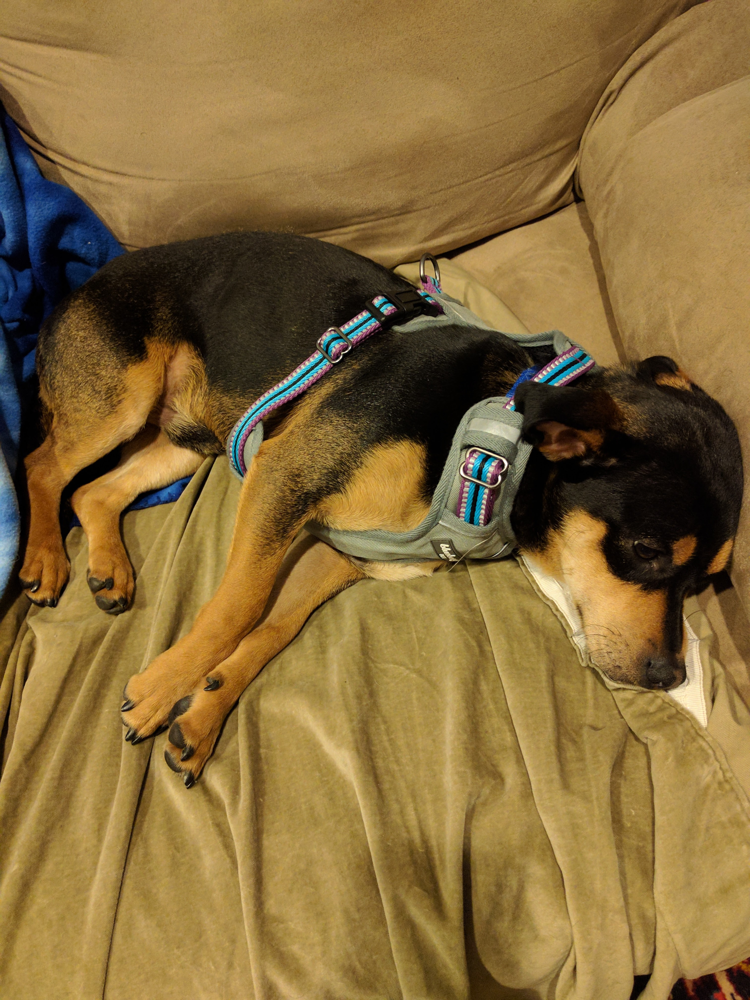
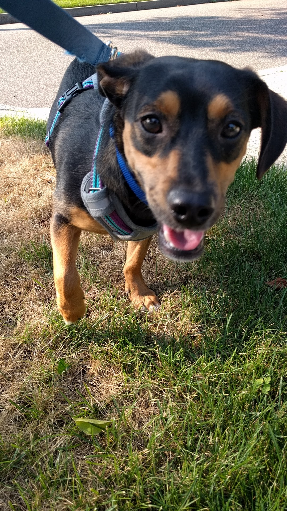
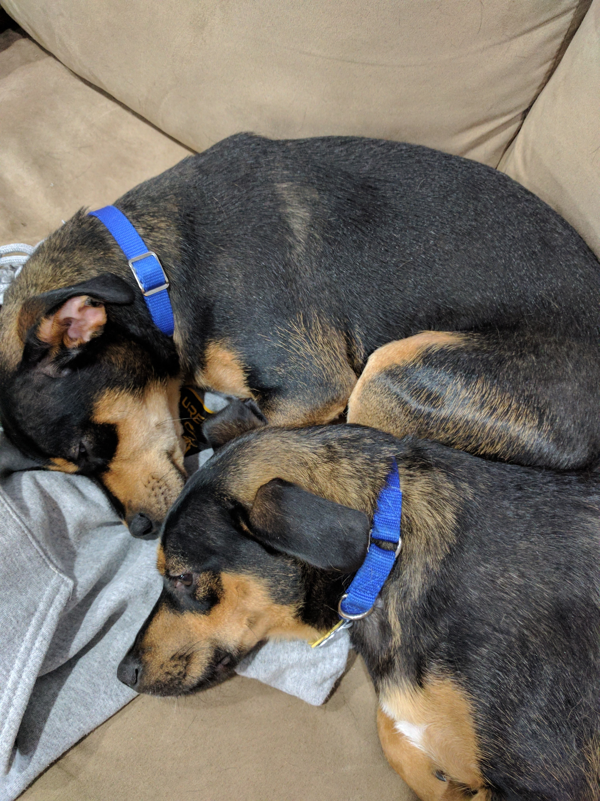
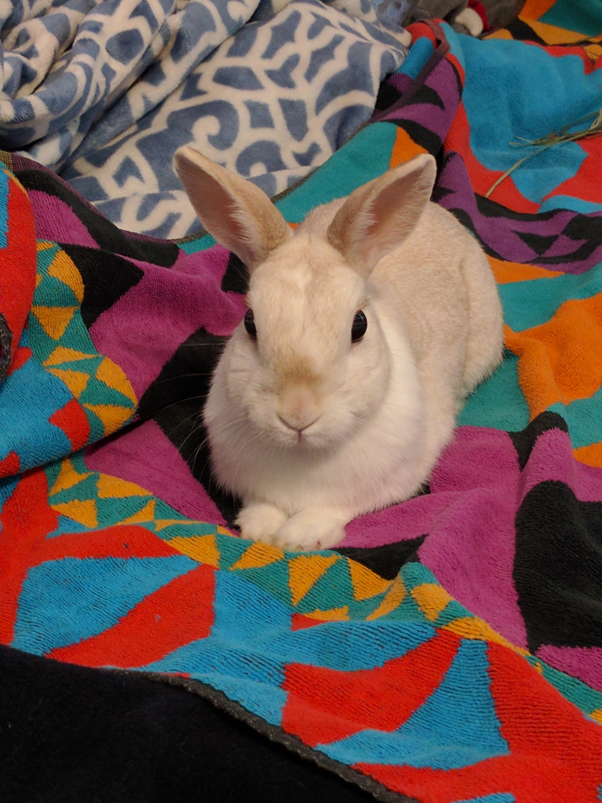
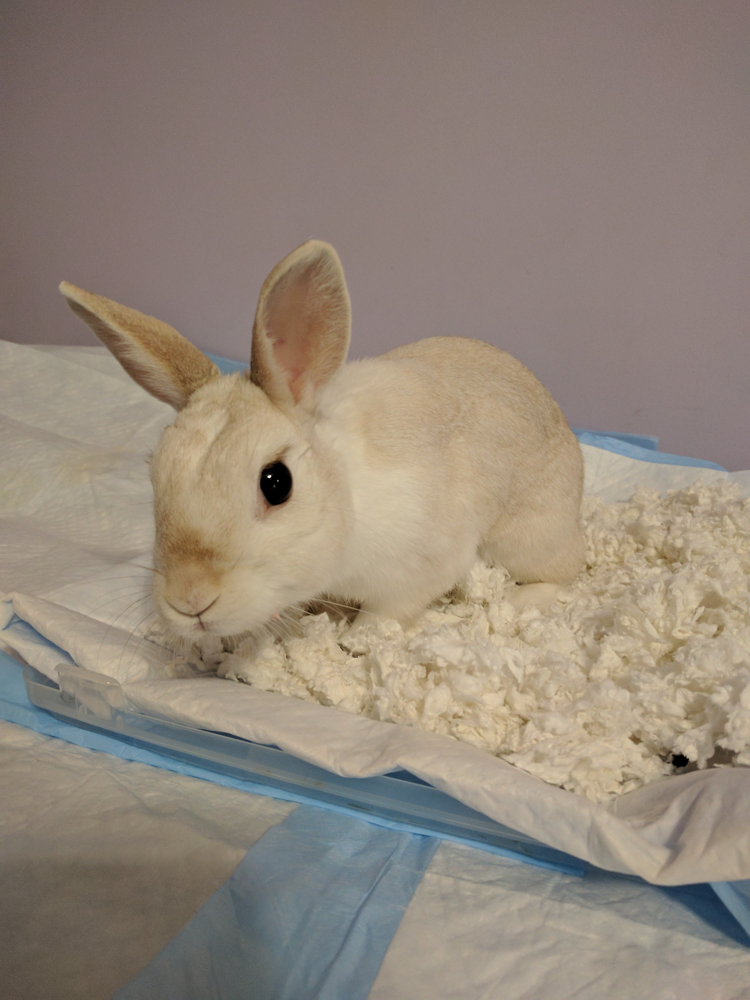

~ My Pets ~
I have three adorable pets: two dogs and a bunny.
My dogs names are Jack and Oliver. They are brothers and were rescued by my family two months ago from North Shore Animal League.

This is Jack.

This is his brother Oliver.



This is my bunny Thumper. She is seven years old and we had her since June 2010. Thumper's favorite food is peach.